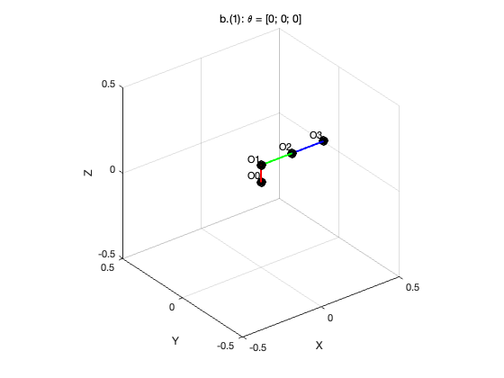
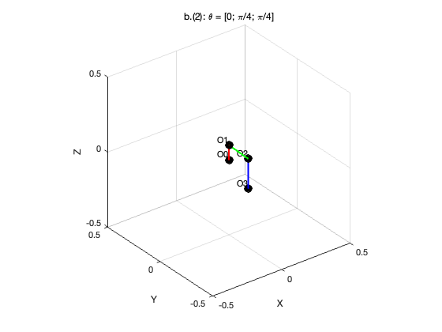
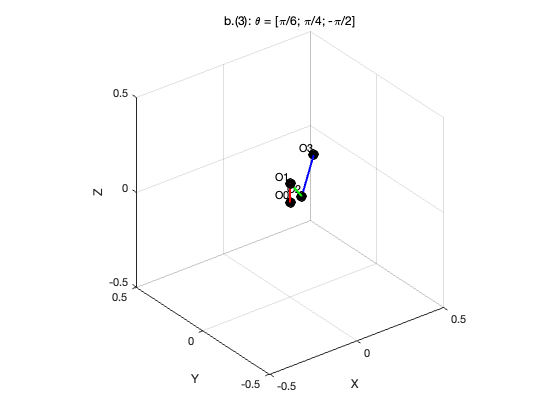
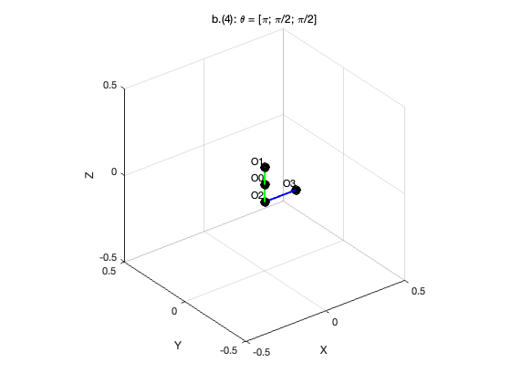
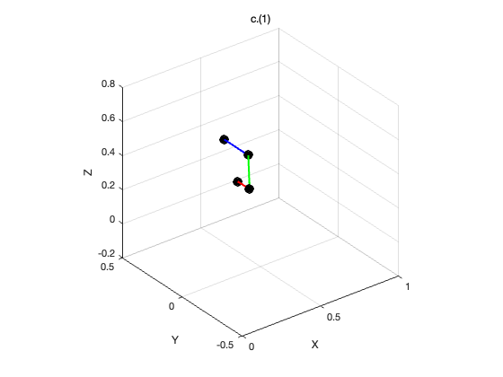
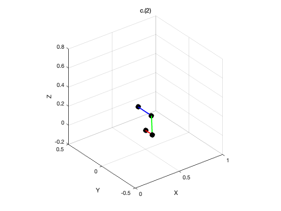
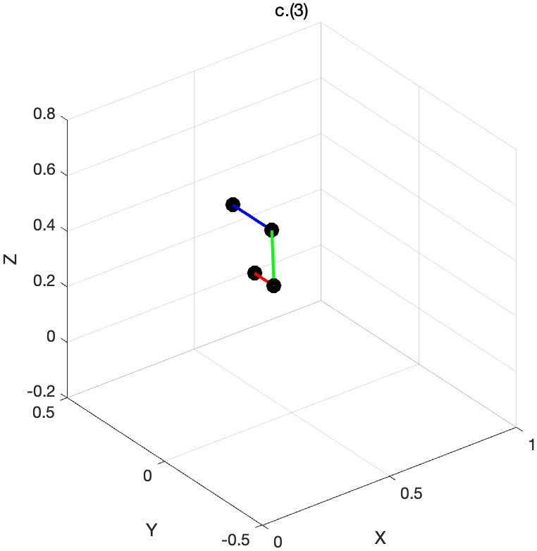

Contents
clc; clear; close all; % parameters a1 = 0.1; a2 = 0.2; a3 = 0.2;
b.
theta1 = [0; 0; 0]; theta2 = [0; pi/4; pi/4]; theta3 = [pi/6; pi/4; -pi/2]; theta4 = [pi; pi/2; pi/2];
b1
figure;
[O0, O1, O2, O3] = calculate_joint_positions(a1, a2, a3, theta1);
plot_robot_arm(O0, O1, O2, O3);
title('b.(1): \theta = [0; 0; 0]');
 b2
figure;
[O0, O1, O2, O3] = calculate_joint_positions(a1, a2, a3, theta2);
plot_robot_arm(O0, O1, O2, O3);
title('b.(2): \theta = [0; \pi/4; \pi/4]');
 b3
figure;
[O0, O1, O2, O3] = calculate_joint_positions(a1, a2, a3, theta3);
plot_robot_arm(O0, O1, O2, O3);
title('b.(3): \theta = [\pi/6; \pi/4; -\pi/2]');
 b4
figure;
[O0, O1, O2, O3] = calculate_joint_positions(a1, a2, a3, theta4);
plot_robot_arm(O0, O1, O2, O3);
title('b.(4): \theta = [\pi; \pi/2; \pi/2]');
 c.
arm
theta_c = [0; pi/4; pi/4]; % Rigid Motion Matrixs Trans = [ 1, 0, 0, 0.5; 0, 1, 0, 0; 0, 0, 1, 0; 0, 0, 0, 1 ]; Roll = [ 1, 0, 0, 0; 0, 0, -1, 0; 0, 1, 0, 0; 0, 0, 0, 1 ]; Yaw = [ cos(pi/4), -sin(pi/4), 0, 0; sin(pi/4), cos(pi/4), 0, 0; 0, 0, 1, 0; 0, 0, 0, 1 ]; % c1 H1 = Roll * Yaw * Trans; % c2 H2 = Trans * Roll * Yaw; % c3 H3 = Roll * Yaw * Trans;
c1
figure;
[O0, O1, O2, O3] = calculate_joint_positions(a1, a2, a3, theta_c);
plot_robot_arm_with_base(O0, O1, O2, O3, H1);
title('c.(1)');
 c2
figure;
[O0, O1, O2, O3] = calculate_joint_positions(a1, a2, a3, theta_c);
plot_robot_arm_with_base(O0, O1, O2, O3, H2);
title('c.(2)');
 c3
figure;
[O0, O1, O2, O3] = calculate_joint_positions(a1, a2, a3, theta_c);
plot_robot_arm_with_base(O0, O1, O2, O3, H3);
title('c.(3)');
 Function: cal point O
function [O0, O1, O2, O3] = calculate_joint_positions(a1, a2, a3, theta) theta1 = theta(1); theta2 = theta(2); theta3 = theta(3); % Matrix T1 = [ cos(theta1), -sin(theta1), 0, 0; sin(theta1), cos(theta1), 0, 0; 0, 0, 1, a1; 0, 0, 0, 1 ]; T2 = [ cos(theta2), 0, sin(theta2), a2*cos(theta2); 0, 1, 0, 0; -sin(theta2),0, cos(theta2), -a2*sin(theta2); 0, 0, 0, 1 ]; T3 = [ cos(theta3), 0, sin(theta3), a3*cos(theta3); 0, 1, 0, 0; -sin(theta3),0, cos(theta3), -a3*sin(theta3); 0, 0, 0, 1 ]; % vectors O_1 = T1; O_2 = T1 * T2; O_3 = T1 * T2 * T3; % coordinates O0 = [0; 0; 0]; O1 = O_1(1:3, 4); O2 = O_2(1:3, 4); O3 = O_3(1:3, 4); end
Plot b
function plot_robot_arm(O0, O1, O2, O3) % lines plot3([O0(1), O1(1)], [O0(2), O1(2)], [O0(3), O1(3)], 'r', 'LineWidth', 2); hold on; plot3([O1(1), O2(1)], [O1(2), O2(2)], [O1(3), O2(3)], 'g', 'LineWidth', 2); plot3([O2(1), O3(1)], [O2(2), O3(2)], [O2(3), O3(3)], 'b', 'LineWidth', 2); % joints plot3(O0(1), O0(2), O0(3), 'ko', 'MarkerSize', 10, 'MarkerFaceColor', 'k'); plot3(O1(1), O1(2), O1(3), 'ko', 'MarkerSize', 10, 'MarkerFaceColor', 'k'); plot3(O2(1), O2(2), O2(3), 'ko', 'MarkerSize', 10, 'MarkerFaceColor', 'k'); plot3(O3(1), O3(2), O3(3), 'ko', 'MarkerSize', 10, 'MarkerFaceColor', 'k'); % remarks text(O0(1), O0(2), O0(3), 'O0', 'VerticalAlignment', 'bottom', 'HorizontalAlignment', 'right'); text(O1(1), O1(2), O1(3), 'O1', 'VerticalAlignment', 'bottom', 'HorizontalAlignment', 'right'); text(O2(1), O2(2), O2(3), 'O2', 'VerticalAlignment', 'bottom', 'HorizontalAlignment', 'right'); text(O3(1), O3(2), O3(3), 'O3', 'VerticalAlignment', 'bottom', 'HorizontalAlignment', 'right'); xlabel('X'); ylabel('Y'); zlabel('Z'); axis equal; grid on; axis([-0.5 0.5 -0.5 0.5 -0.5 0.5]); view(3); end
plot c
function plot_robot_arm_with_base(O0, O1, O2, O3, T_base) % rotated coordinates O0_new = T_base * [O0; 1]; O1_new = T_base * [O1; 1]; O2_new = T_base * [O2; 1]; O3_new = T_base * [O3; 1]; plot3([O0_new(1), O1_new(1)], [O0_new(2), O1_new(2)], [O0_new(3), O1_new(3)], 'r', 'LineWidth', 2); hold on; plot3([O1_new(1), O2_new(1)], [O1_new(2), O2_new(2)], [O1_new(3), O2_new(3)], 'g', 'LineWidth', 2); plot3([O2_new(1), O3_new(1)], [O2_new(2), O3_new(2)], [O2_new(3), O3_new(3)], 'b', 'LineWidth', 2); plot3(O0_new(1), O0_new(2), O0_new(3), 'ko', 'MarkerSize', 10, 'MarkerFaceColor', 'k'); plot3(O1_new(1), O1_new(2), O1_new(3), 'ko', 'MarkerSize', 10, 'MarkerFaceColor', 'k'); plot3(O2_new(1), O2_new(2), O2_new(3), 'ko', 'MarkerSize', 10, 'MarkerFaceColor', 'k'); plot3(O3_new(1), O3_new(2), O3_new(3), 'ko', 'MarkerSize', 10, 'MarkerFaceColor', 'k'); xlabel('X'); ylabel('Y'); zlabel('Z'); axis equal; grid on; axis([0 1 -0.5 0.5 -0.2 0.8]); view(3); end